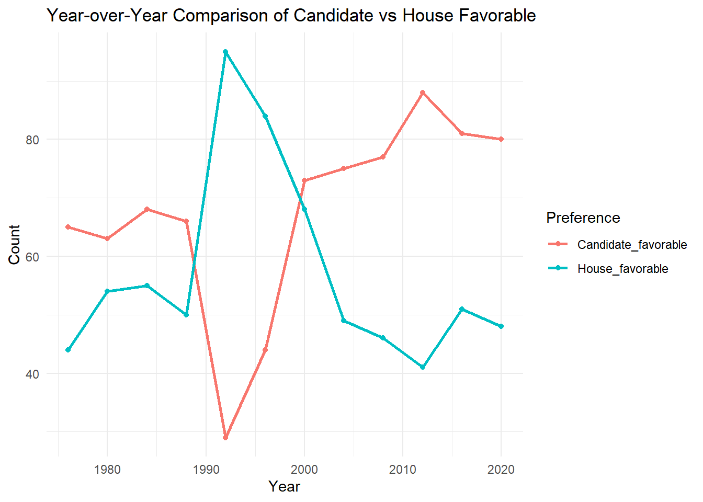
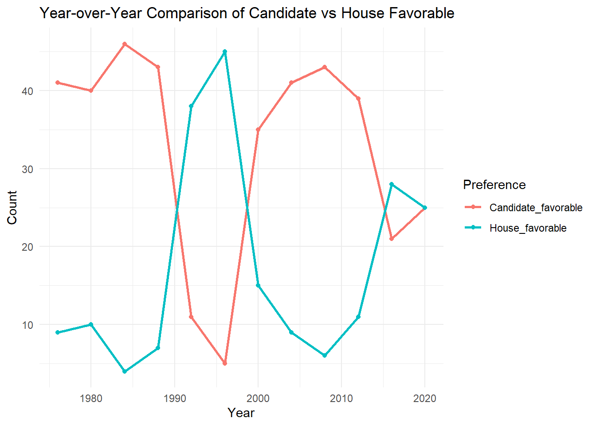
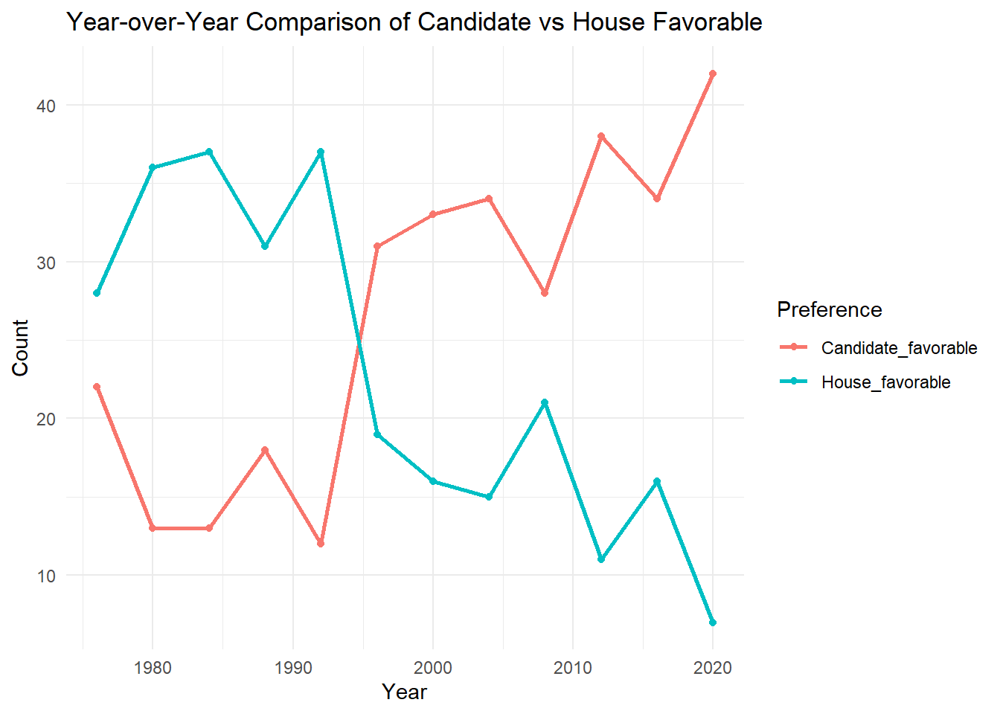
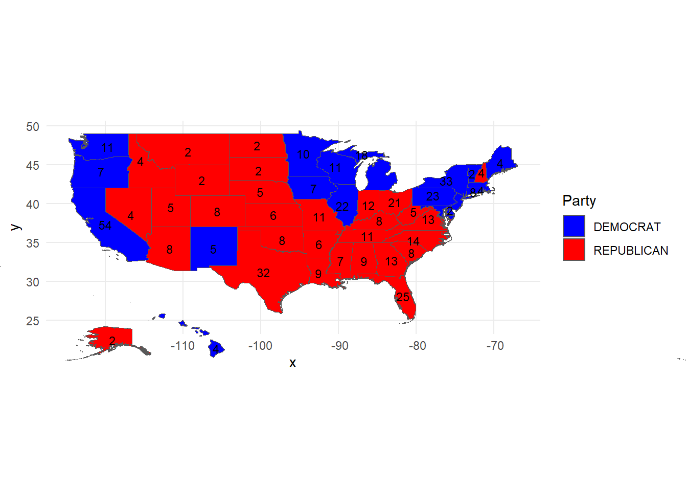
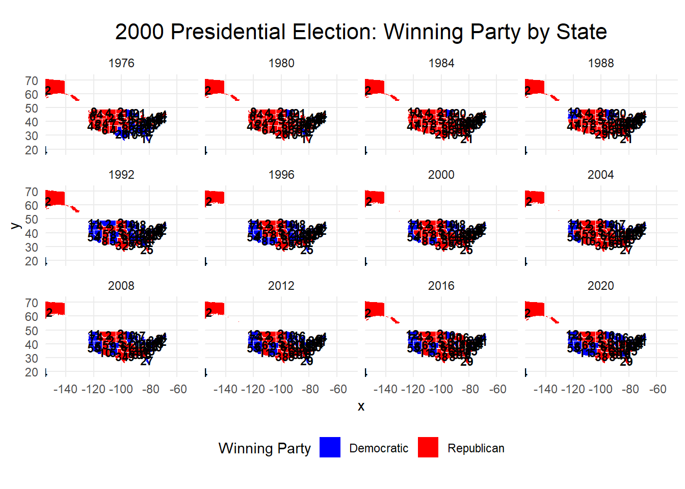
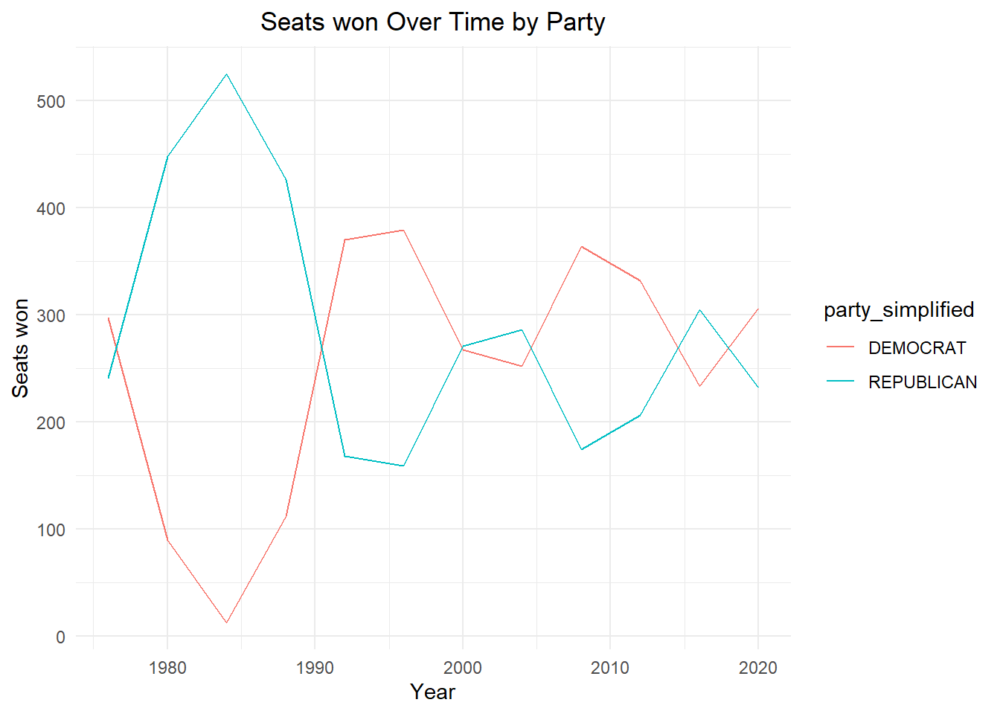
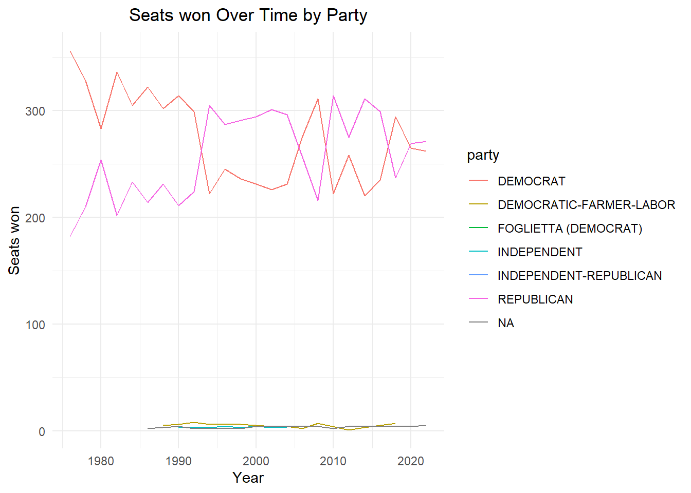
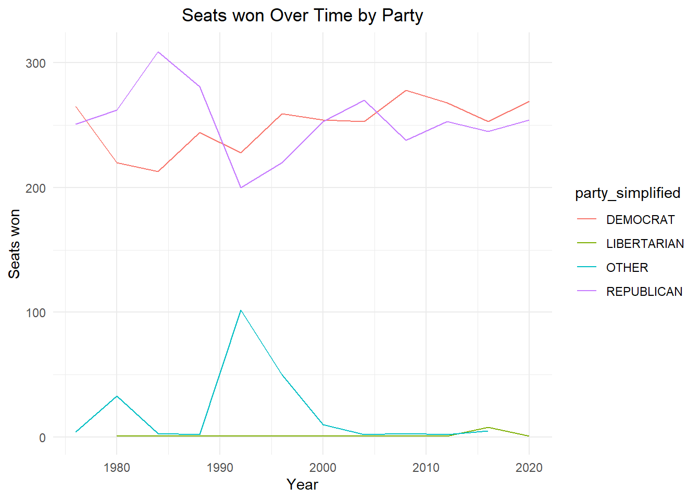
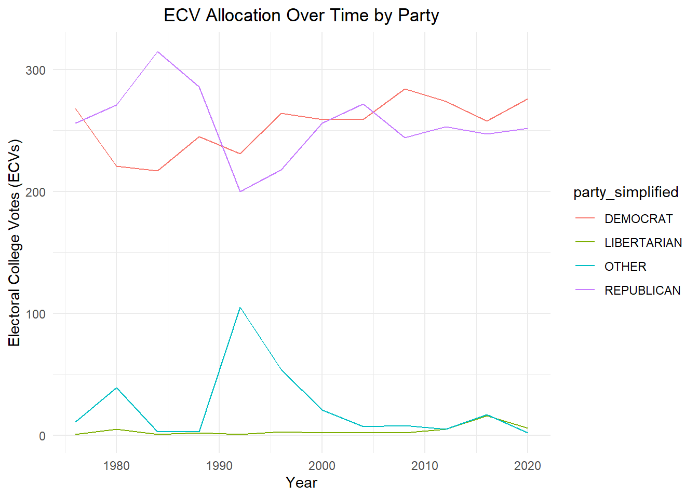

| District_file | District_Number | Year |
|---|---|---|
| districts111.zip | 111 | 2009 |
| districts111.zip | 111 | 2010 |
| districts112.zip | 112 | 2011 |
| districts112.zip | 112 | 2012 |
| districts112.zip | 112 | 2013 |
| districts113.zip | 113 | 2013 |
| districts113.zip | 113 | 2014 |
| districts114.zip | 114 | 2015 |
| districts114.zip | 114 | 2016 |
| districts114.zip | 114 | 2017 |
Will Peters STA9750-2024-FALL MP03
Introduction and Overview
Given that the election just happened, I thought I might take the opportunity to learn the results of previous elections, particularly as an Australian, I can admit the U.S Electoral College System is confusing
So to start off with, installing all the libraries that I used at some point in this project, hidden out of convenience so it can flow easier.
Data Preparation/Download
US Election Votes
To start off with, we need to download and extract the votes for state-wide presidential and house level votes, here is where I add a note that the incomplete data, means you will need to add in District of Columbia (D.C), did you know that is what D.C stood for? At least when it comes the states not to be confused with Detective Comics for DC Comics.
I have included the sources for the president and house votes, in case you want to follow along.
As I mentioned earlier we need to add in the D.C. votes for each year, otherwise we will have incomplete data, in this case Democrats have won each year in our time period all 3 seats except 2000 where they won 2 out of 3, and as such going to be allocating all seats in all elections to the Democrats.
Congressional Boundaries
So to prepare for the Congressional Boundaries and the wider geo-spatial mapping, I did have to cheat a little bit, and copy and paste the table in the download period to extract the dates. So you will see the read_csv rather than an html extract given the table_wrapper used for the data. If you have figured that out well done, and reachout on my github as you can color me impressed.
If you are following along so far, I thought it might be helpful for a small gift of a table to be shown of how we are treating the District table that we will be using in the mapping.
Downloading Congressional Zips
This is where we start utilize the automated downloading of the ZIP files, which include the sections of different districts used in the election and the spatial analysis of them, thank you to Jefferey Lewis, who put this together, as creating from scratch the spatial analysis of Congressional Districts would be a real challenge. Given that it is 2 separate websites, one for 1976-2014 that we are analyzing and a separate one for 2014-2022 which is the latest direct information from the government I am going to coin these two as Tasks 1 (Shape Files from 1976-2012) and Task 2 (Shape Files from 2014-2022)
Task 1
File already exists: districts094.zip
File already exists: districts095.zip
File already exists: districts096.zip
File already exists: districts097.zip
File already exists: districts098.zip
File already exists: districts099.zip
File already exists: districts100.zip
File already exists: districts101.zip
File already exists: districts102.zip
File already exists: districts103.zip
File already exists: districts104.zip
File already exists: districts105.zip
File already exists: districts106.zip
File already exists: districts107.zip
File already exists: districts108.zip
File already exists: districts109.zip
File already exists: districts110.zip
File already exists: districts111.zip
File already exists: districts112.zip Well done we have now downloaded all the relevant zip files that we will be needing from this source, these will later come in handy but for early stages, we can keep these in storage.
Task 2
Downloading the information for 2014-2022 from the government website directly, this will be useful as more and more information is stored, but half the role is always aggregating the data and ensuring data quality.
File already exists: Tiger2014.zip
File already exists: Tiger2015.zip
File already exists: Tiger2016.zip
File already exists: Tiger2017.zip
File already exists: Tiger2018.zip
File already exists: Tiger2019.zip
File already exists: Tiger2020.zip
File already exists: Tiger2021.zip
File already exists: Tiger2022.zip I appreciate your patience to get to this stage, but as you can imagine there is a lot of Data preparation before we get to the stage of demonstrating and visualizing the data.
Time for insights
Preliminary analysis of Vote Count Data
So now we get to the stage where we can Explore the Vote Count Data, if you consider this our third task of automating the process. We are going to be investigating just on the House of Representatives and seeing which states have gained or lost power over the past 46 years (1976-2022). Interestingly as a basketball fan 1976 was when the NBA and ABA merged, obviously not being born I have only heard stories about this.
Task 3
So to start it off we want to see what the change in the number of house votes were, or who gained and lost the most power.
| state_po | 1976 | 2022 | change |
|---|---|---|---|
| TX | 24 | 38 | 14 |
| NY | 39 | 26 | -13 |
So that is fascinating that New York has lost the most states and Texas has gained the most, now each person has there own theories, my reason would be Covid made a lot of jobs remote, and so New York lost it’s charm compared to pre-Covid times, whereas Texas and Florida were a lot more open so drew people to the freedom.
Now who here knew about fusion voting which is candidates appearing multiple times on the ballot under multiple parties, such as Michael Zumbluskas who appeared in Republican, Conservative and Parent. This is something I had to get my head around, but thankfully only applies to New York and Connecticut.
| year | state_po | district | candidate |
|---|---|---|---|
| 1976 | NY | 29 | EDWARD W PATTISON |
| 1980 | NY | 3 | GREGORY W CARMAN |
| 1980 | NY | 6 | JOHN LEBOUTILLIER |
| 1984 | NY | 20 | JOSEPH J DIOGUARDI |
| 1986 | NY | 27 | GEORGE C WORTLEY |
| 1992 | CT | 2 | SAM GEJDENSON |
| 1992 | NY | 3 | PETER T KING |
| 1994 | NY | 1 | MICHAEL P FORBES |
| 1996 | NY | 1 | MICHAEL P FORBES |
| 1996 | NY | 30 | JACK QUINN |
| 1996 | TX | 9 | NICK LAMPSON |
| 2000 | CT | 2 | ROB SIMMONS |
| 2006 | NY | 25 | JAMES T WALSH |
| 2006 | NY | 29 | JOHN R “RANDY” KUHL JR |
| 2010 | NY | 13 | MICHAEL G GRIMM |
| 2010 | NY | 19 | NAN HAYMORTH |
| 2010 | NY | 24 | RICHARD L HANNA |
| 2010 | NY | 25 | ANN MARIE BUERKLE |
| 2012 | NY | 27 | CHRIS COLLINS |
| 2018 | NY | 1 | LEE M ZELDIN |
| 2018 | NY | 24 | JOHN M KATKO |
| 2018 | NY | 27 | CHRIS COLLINS |
| 2022 | NY | 4 | ANTHONY P D’ESPOSITO |
| 2022 | NY | 17 | MICHAEL V LAWLER |
| 2022 | NY | 22 | BRANDON M WILLIAMS |
The Texas examples here are due to the special election, still sorting out how those should be treated going forward, of course I could manually patch those out but I deem that to be unfair, and an inconsistent approach to data, as if it breaks it needs to be fixed.
Finally I wanted to look into a larger topic, that the president is elected not by the house constituents (granted my knowledge is limited on this) but the district votes are for the house of representatives and president is at a state wide level.
So to start with we will prepare the data by reviewing if the Party or the President got more votes state by state.
After all that work in preparing the data tables, it comes down to how is it shown in the graphs, the visuals

As you can see this shows that the candidate is generally favorable but there are occasions where the House favor-ability is much higher

A lot more noticeable in variance until we see in 2020 where they almost perfectly align.

In more recent years we are seeing the democratic Candidate is preferred over the house_favorable numbers.
What are the takeaways for this it could be due to no simple party identifiers in the house data, or people like to hedge the bets voting one way for president and the other for house.
Plotting Shapes
Now as you saw previously we downloaded a lot of congressional data in zip files, technically speaking these zip files include a file type shp which is used to read spatial data. So if you are following along this is the 4th Transferrable activity or Task 4
Extracting ZIP file information
Task 4
Since that has now all been aggregated and all the mapping has been brought into the r instance we are going to go through the visualization of the 2000 Presidential Election.
Shape visualizations
Next we are going to add in a Choloropleth Visualization or coloured in graph for the Bush vs Gore election, to demonstrate how you can use colouring to show map information and provide a template for if you wanted to do your own analysis. Calling this the fifth task in analysing the data and being able to show it.
Task 5
So one period looking at the Chloropleth Visualization.

That is pretty cool, I hope you enjoyed that visualization, however the ball keeps on rolling and this next task is a bit more advanced, however you are probably up for the challenge. The 6th task is to perform a faceted version, and if really skilled an animated version
Task 6
As you can see below I have attempted the gganimate, but have made it text as it doesn’t run successfully due to some bugs plaguing it, however if you want to outsmart it have included the code for the effort.
For the faceted approach

Finally it wouldn’t be fair to have done all this work without critiquing the overall logic itself and so we have provided a review of the different commonly recommended approaches.
Fairness of ECV Allocation Schemes
Task 7 Analyzing the ECV Allocation Schemes
What are the ECV Allocation Schemes?
State-Wide Winner-Take All
This is using the approach that the top winning presidential candidate in that state gets all the seats in the State

District-Wide Winner-Take-All
This provides each state with each District going to the winning party, except for the additional State seats (2 seats) going to the majority presidential candidate in that state.

State-Wide Proportional
This method applies the proportion of votes the candidate got across the number of seats to the individual state.

National Proportional
This is pretty obvious as the majority rules logic, with the President getting the most votes winning the majority of seats.

Take 1984 as a prime example the Republicans would have won in a popularity contest, being the national and state apportionment however it is clear that the Democrats won under the other two methodologies. Since it is representative of overall population in key areas it is right to say that the Democrats could make a claim to have won, however I think given the overwhelming republican popularity, they may have contested the election.
Footnotes
https://cdmaps.polisci.ucla.edu/↩︎
https://www.census.gov/geographies/mapping-files/time-series/geo/tiger-line-file.html↩︎
MIT Election Data and Science Lab, 2017, “U.S. House 1976-2022,” https://doi.org/10.7910/DVN/IGOUN2, Harvard Dataverse, v13, UNF:6: Ky5FkettbvohjTSN/IvldA== [fileUNF].↩︎
MIT Election Data and Science Lab, 2017, “U.S. President 1976-2020,” https://doi.org/10.7910/DVN/42MVDX, Harvard Dataverse, v8, UNF:6:F0opd1IRbeY190yVfzglUw== [fileUNF].↩︎